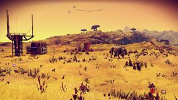
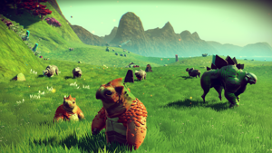

To me, No Man’s Sky started out as a very limited combination of Mass Effect, with only a tiny fraction of the story - Minecraft, resource gathering minus the building - and The Long Dark, but much easier to survive. Within my first few hours of playing, I longed for just a touch more of any of these things. Unfortunately, the more I played, the less likely it seemed I would get any. But I was still enjoying myself and I knew deep down that this game possessed so much potential. Turns out, it was my mindset that needed changed, not the game.
In order for me to fully enjoy No Man’s Sky, I’ve had to invent my character in my mind to reconcile my (admittedly ignorant) expectations and what the game actually offers. Here’s what I came up with:
I’m a nomadic space sailor, never wanting to stay put. The planets are my islands and the intergalactic medium is my ocean. I have no desire to settle down and make a home for myself. The Universe is my home and there’s only so much time to explore and make new discoveries.

Speaking of discoveries, I’m also an amateur archaeologist. During my travels I’ve stumbled upon many ancient alien artifacts, each of which only hint at what events took place all those eons ago. But I’m learning. I collect the puzzle pieces and slowly recover what is left of these civilizations. Their memory is their legacy, and I’m their courier.
But there are aliens still alive today that have their story to tell and I’m here to listen. I’m also an alien nature photographer and documenter. In between the long sea travels, I make pit-stops on planets to not only replenish the basic survival necessities, but to also stop and smell the flowers. I snap photos and gather a bit of data to record the newly discovered flora and fauna. Why? For the ‘Greater Good,’ I guess. I’ll report it back to the galactic libraries and universities. I’ll do my part as long as they’re payin’. But honestly I do it because, well, I enjoy it! There’s nothing like walking for miles and miles only to crest a hilltop and reveal a family of previously unknown species grazing the plains! Life! Out here... thriving, far from any so-called ‘intelligent civilizations’ who only pave over these creatures in order to benefit themselves.
In between picture taking I’ll scrounge for resources to sell. The trading and bartering doesn’t take up too much time. And I’ve met some, let’s say, ‘interesting’ folks out there. The only time things get a little hairy is when those good-for-nothin’ pirates show up. But even the pirates are just a minor inconvenience. I avoid them when I can and run when I can’t. No need for confrontation. I just stick to myself.

The storms and rough environments make it tough sometimes when I’m collecting but they just come with the territory. Sometimes I find a frozen wasteland and other times I land on a noxious, fuming, onion of a planet. But it all pays off when I find that Eden in the haystack. Then I’m reminded that things aren’t all that bad. Do the “grand vistas” ever get repetitive? Does the newness ever wear off? Sure. But I challenge anyone to come up with something that doesn’t get old after the fiftieth time they’ve seen it. I’ll tell ya though, there has been some very memorable ones! Ask someone who has lived their whole life in a forest how many trees they’ve seen, then ask them about some of their favorites. Those happy memories are real, and not soon forgotten. Plus, did you know there are alien worlds within alien worlds hiding under the oceans?! For me, that simple change of scenery really makes a difference after the monotony of dry land has set in.
I’m at peace out here among the stars. This is where I belong. I’ve long since abandoned any need for companions and love stories. I’m too adventurous to be tied down to any one specific place. I’m too old to build a base from scratch and too young to settle down. How could you settle when there’s so much out there to explore? Plus, I don’t really feel like building a settlement – you know how much work that would be? Naa... I’m content to live out of my Backpack Spaceship and live off the land. Is it really that much of a hassle to refill my life-support canteen every once in a while?
I’m not going to lie, sometimes it is a grind. Sometimes I ask myself why I do it. Why do I waste time scouring an entire planet for a particular type of resource only to upgrade my ship for one measly inventory slot. But then I think, “Why not?” What else do I have to do? Isn’t that what Life essentially is? Doing countless menial tasks in order to survive long enough just to catch a glimpse of happiness? I’ve wasted so much of my life chasing bandits, narrowly escaping shootouts, and being constantly bombarded with entertainment and bright lights. I’m done with over-stimulation. Sometimes it’s nice to be bored. Sometimes all I want is to do some mindless activities and just think. Plus, nothing beats seeing a sunrise... from space.